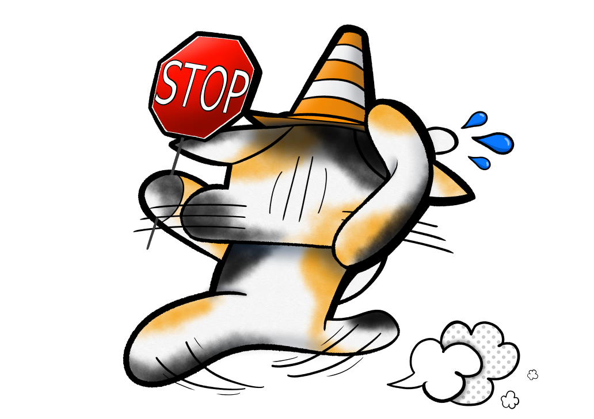
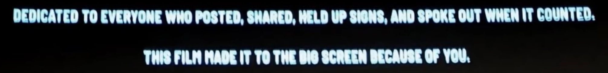

Coyote vs. ACME is a love letter to a medium in dire times
Coyote vs. ACME is a love letter to a medium in dire times

SPOILER WARNING !!
This blog entry contains spoilers to Coyote vs. ACME !
If you still plan on seeing this movie:
PLEASE PLEASE PLEASE don't spoil yourself and read this blog post after you've done so !!
It's a pretty good movie ! You should really go and watch it if you haven't already !
On July 25, 2026, Coyote vs. ACME finally got to see the light of day at San Diego Comic-Con, after being in the works many years, dying a brutal death, also referred to as a tax write-off in the industry, then ultimately being bought and resurected by fans and released to theaters around the world.
I know i may be a bit late to the party, as this movie has been running in theaters for a good handful of weeks now, but this friday i finally got around to watch it in theaters. Safe to say this movie is amazing !
It's story is based on an article written by humorist Ian Frazier in 1990 for the New Yorker Magazine, which would be expanded on by writers James Gunn, Samy Burch and Jeremy Slater.
I don't think i need to introduce Wile E. Coyote and the Roadrunner to anyone. Being part of the Looney Tunes they are among one of the most recognizable cartoon characters in recent history.
The Movie features Wile E. Coyote suing the ACME Corporation for all the faulty products they have sold to him over the years which got him hurt. Alongside him he brought the lawyer Kevin Avery, played by Will Forte, who specializes in cases involving cartoon violence and initialy only wants to settle the case with ACME with a small sum of money, just like he did with all of the other cases surrounding ACME's faulty products in the past, as he is scared of fighting a big court case against ACME.
But with the amount of products which have failed on Wile E. Coyote in all those years, they quickly garner the attention of the ACME Corporation, whose Lawyer Buddy Crane, played by John Cena, also initialy wants to settle out of court with a sum of money, possibly to avoid any kind of negative press.
Wile E. Coyote however isn't interested and still wants to take ACME to court anyways. This leads both Wile E. Coyote and Kevin Avery, together with his niece Paige Avery played by Lana Condor, down a rabbit hole, uncovering the shady practices of the ACME Corporation.
Personaly i really enjoyed the movie a lot ! Same goes for the style the movie is going for ! It pays homage to other movies from the past which mixed animated characters with the real world, like Space Jam or Who Framed Roger Rabbit. I also appreciate that the people behind this movie stayed true to the source material, like how the Coyote mainly communicates with others by holding up signs or how the Roadrunner still is that uncatchable being, where even the attempts of ACME trying to catch the Roadrunner fall flat.
It really goes to show that the people making this movie really show a lot of love for the Looney Tunes franchise. A love which sadly not all people in and around Warner Bros would share.
The movie's story of Wile E. Coyote fighting against the big ACME Corporation shares some striking similarities with how Warner Bros executives treated this movie during its production. After the movie had already being finished, Warner Bros decided to shelve the movie in November of 2023 to write it off for tax. A fate possibly worse than death.
Obviously, this caused a lot of outrage, besides it being just a horrendously stupid business move to begin with. As if Warner Bros didn't have any sort of faith in their unarguably most iconic franchise. That would be as if Nintendo were to cancel the release of an already completed Mario game and instead released a sequel to Wii Music called Switch Music.
Warner Bros' decision in shelving the movie and wanting to write it off for tax just goes to show that executives of such large media companies often don't care about the art of animation. Especially nowadays, where the jobs of hundreds of thousands of artists are on the line due to the rise of ai generated slop, it really was a spit in the face to all of the people who had worked on this movie.
ESPECIALLY considering the fact that... the movie had already been finished...?
Thanks to the push back from fans and industry veterans, Warner Bros agreed to find another studio which would distribute the movie, and in March of 2025 Ketchup Entertainment bought the rights to Coyote vs. ACME for $50 Million, after already having distributed The Day the Earth Blew Up, another Looney Tunes movie from 2025.

"Dedicated to everyone who posted, shared, held up signs, and spoke out when it counted."
"This film made it to the big screen because of you."
Coyote vs. ACME was never supposed to see the light of day. Higher ups at Warner Bros Discovery wanted it to face the worst death imaginable: The ill-fated tax write off. Warner Bros did not care for this movie whatsoever.
But the fact that we finally got to see this work of love and passion for the Looney Tunes on the big screen just goes to show that making your voice heard matters. Eventhough Wile E. Coyote ultimately failed to sue the ACME Corporation, by the end, Kevin Avery supporting the Coyote as his lawyer earns Kevin the trust of many other cartoon characters, who have a troubled past with the ACME Corporation.
I think you can apply the movie's ending in similar situations just like the one surrounding this movie. You have the power to enact change. Your voice matters. If you band together with a group of people you can make the people in charge respect your demands.
Stand up for your rights. Don't let demented old white guys and people spotting a Lex Luthor cut dictate your actions.
In Memory of Eric Bauza
12/07/1979 - 10/25/2026
Thank you, for bringing smiles to the faces of millions of people.